<ion-side-menus enable-menu-with-back-views="false">

<!-- CONTENIDO DEL MENU EN LA IZQUIERDA -->  
	<ion-side-menu side="left">
	  <ion-header-bar class="bar-assertive">
	    <h1 class="title">Options</h1>
	  </ion-header-bar>
	  <ion-content ng-controller="menuCtrl as mnu">
	    <ul class="list">
	      <!-- Note each link has the 'menu-close' attribute so the menu auto closes when clicking on one of these links -->
			<a ui-sref="tabs.event" class="item" menu-close><i class="icon ion-bookmark"></i> Evento</a>
			<a ui-sref="tabs.perfil" class="item" menu-close><i class="icon ion-android-contact"></i> Mi Cuenta</a>
			<a ui-sref="tabs.etickets" class="item" menu-close><i class="icon ion-qr-scanner"></i> e-Tickets</a>	     
			<a ui-sref="tabs.populares" class="item" menu-close><i class="icon ion-ios-star"></i> Populares</a>
			<!--a ui-sref="tabs.crear" class="item" menu-close>Crear Evento</a-->
			<a Xng-if="!mnu.isLogged()" ng-href="#/login" class="item" menu-close><i class="icon ion-log-in"></i> Log in</a>	      
	    </ul>
	  </ion-content>
	</ion-side-menu>
<!--					-->

    <ion-side-menu-content>
		<!--ion-header-bar class="bar-positive">
			  <div class="buttons">
				 <button class="button button-icon button-clear ion-navicon" menu-toggle="left"></button>
			  </div>
			  <div class="buttons">
				<h1 style="left:200px" class="title title-left2"></h1>			  
			  </div>
		</ion-header-bar-->
      <ion-nav-bar class="bar-positive">
        
        <ion-nav-back-button>
        </ion-nav-back-button>
		
        <ion-nav-buttons side="left">
			<button class="button button-icon button-clear ion-navicon" menu-toggle="left">
			</button>
			<!--h1 class="title title-left"></h1-->
        </ion-nav-buttons>
		
        
      </ion-nav-bar>
		<ion-tabs has-header=true>
			<ion-tab title="Eventos" Xicon="ion-android-list" href="#/tab/event">
				<ion-nav-view name="tab-event"></ion-nav-view>
			</ion-tab>
			<ion-tab title="Populares" Xicon="ion-ios-world" href="#/tab/populares">
				<ion-nav-view name="tab-populares"></ion-nav-view>
			</ion-tab>
			<!--ion-tab title="Crear evento" Xicon="ion-ios-world" href="#/tab/crear">
				<ion-nav-view name="tab-crear"></ion-nav-view>
			</ion-tab-->
		</ion-tabs>
		<!--ion-nav-view name="menuContent"></ion-nav-view-->
    </ion-side-menu-content> 

</ion-side-menus>